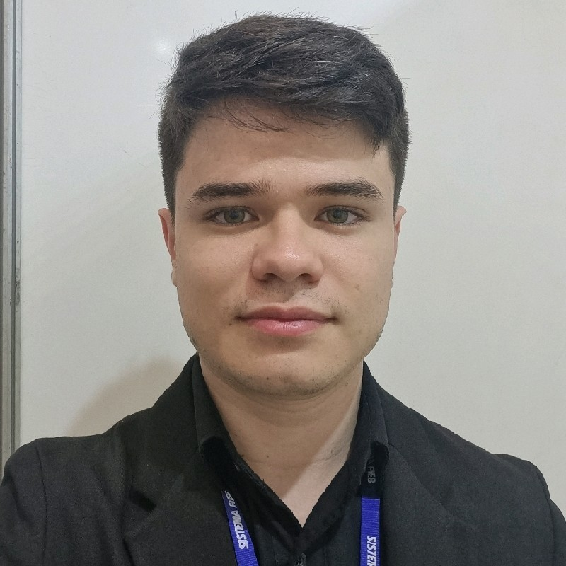
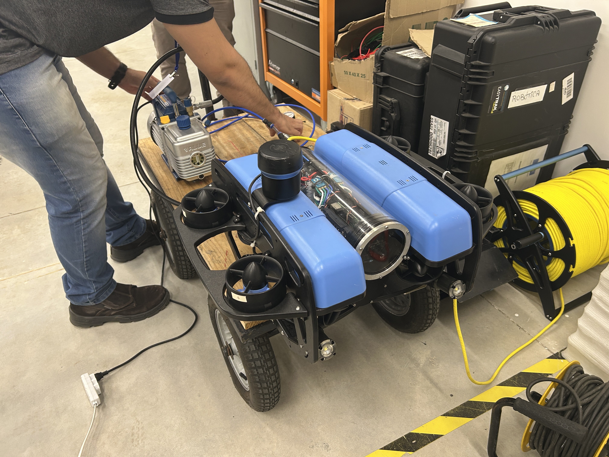
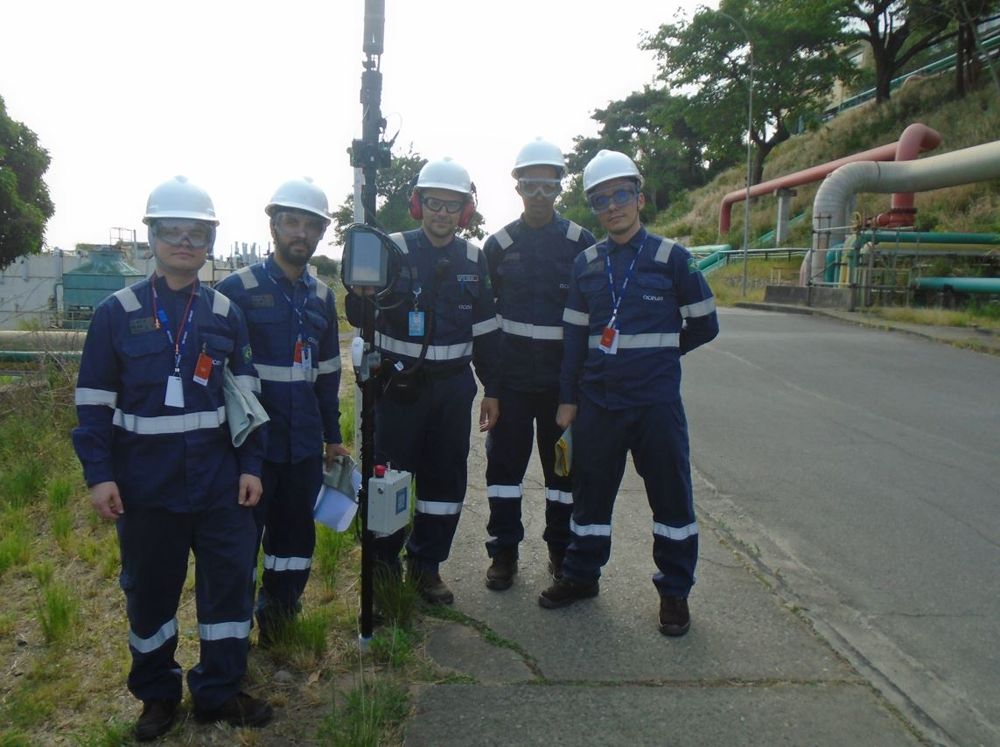
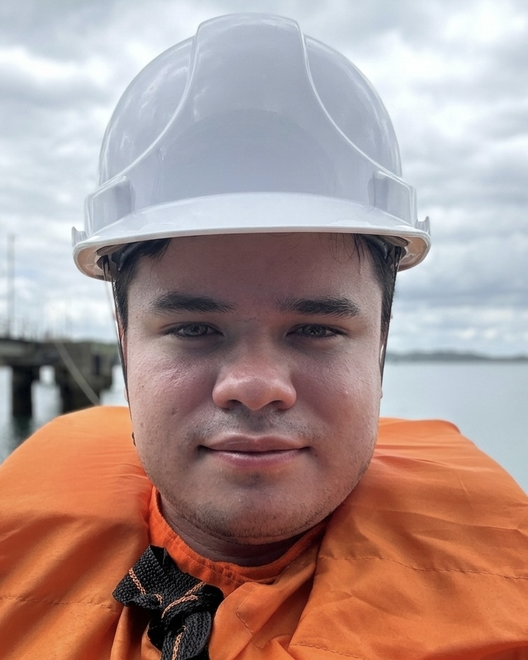
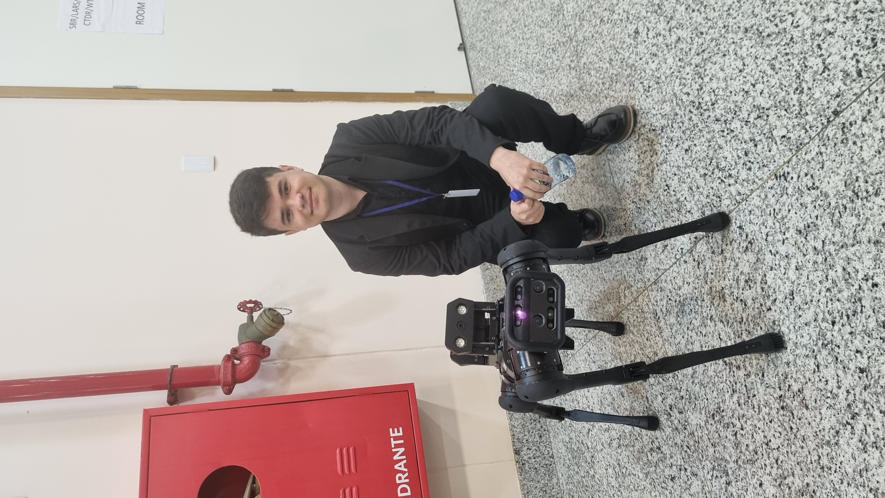
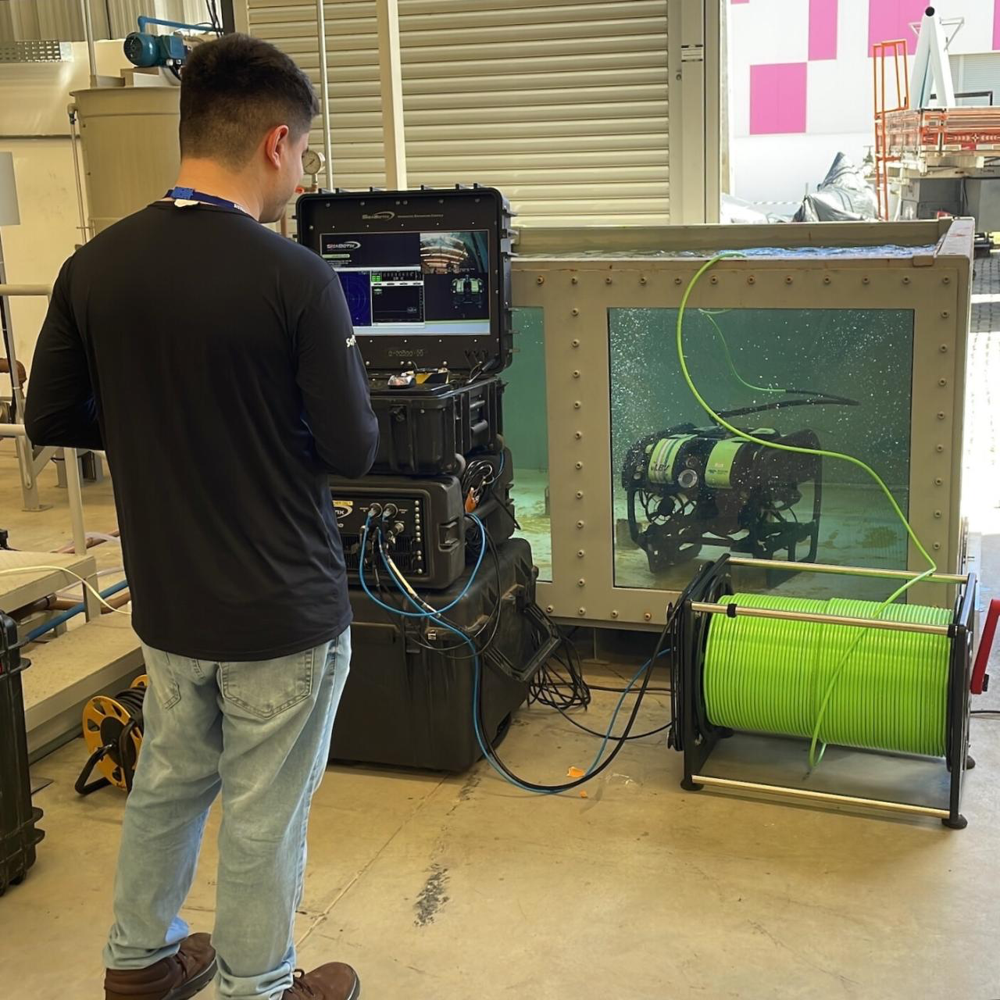
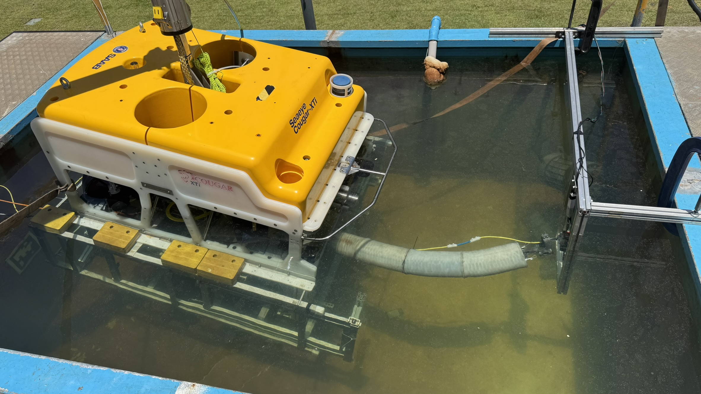
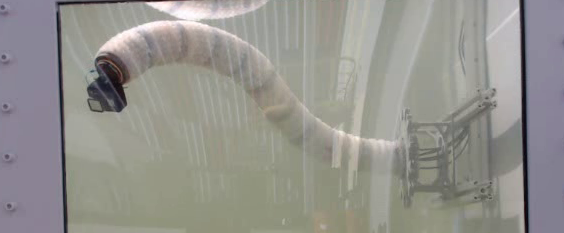
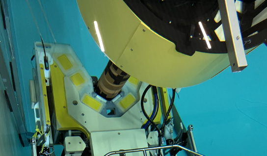
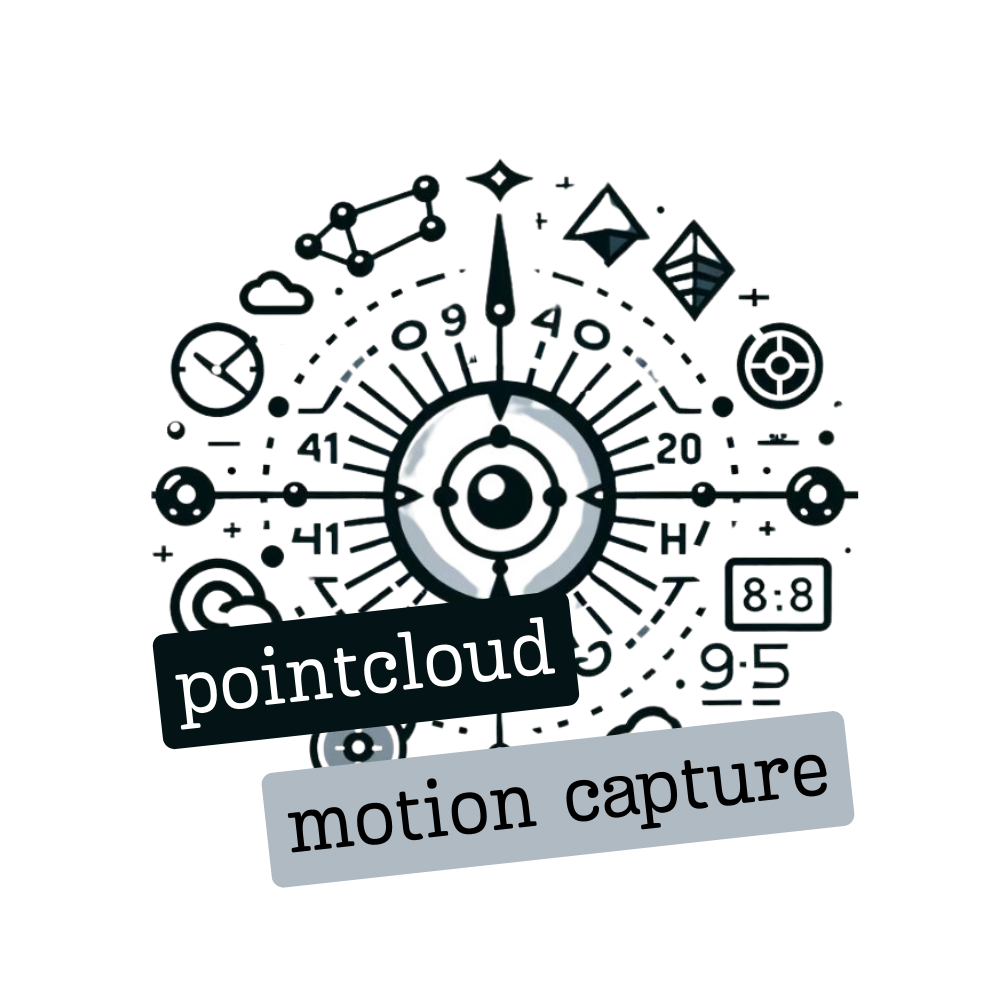

Hello, I am
Robotics Engineer and Software Developer
Developing Robots since 2022 for Oil and Gas Industry at SENAI CIMATEC. Currently working with marine robotics, soft robotics and humanoids, reinforcement learning, MPC and SLAM.
Career
Full-time Roles
Robotics Engineer
SENAI CIMATEC · Salvador, Brazil
• Develoepd software architecture and system integration in C++17/20 and Python using ROS 2, Docker, and Git on industrial robot platforms
• Prepared and conducted field testing and technology qualification campaigns in petrochemical refineries and marine vessels for operators like Shell and Petrobras
• Created and executed comprehensive integration test procedures, system verification protocols, and validation plans in operational environments
• Implemented reliable ROS 2 driver layers and hardware abstraction interfaces for multi-sensor systems including LiDARs, IMUs, and cameras
• Engineered autonomous navigation and localization pipelines using Nav2 and SLAM Toolbox, optimizing real-time performance on physical hardware
Robotics Researcher
SENAI CIMATEC · Salvador, Brazil
• Designed, implemented, and tuned classic and advanced control systems including PID, model-based predictive control, and inverse dynamics control for trajectory tracking
• Designed and drafted electrical diagrams and electronic schematics for custom robotic platforms, managing power distribution and low-level hardware interfaces
• Formulated and validated multi-degree-of-freedom mathematical dynamic models, accounting for hydrodynamic forces and structural constraints
• Created simulation environments and digital twins of physical systems in Gazebo and physics-based engines to test control laws and perception algorithms
• Developed 3D perception scripts using Open3D and PCL, processing point clouds and implementing sensor fusion to support state estimation
Research Fellow in Computer Vision
SENAI CIMATEC · Salvador, Brazil
• Developed and trained convolutional neural network models to automatically detect and classify oil pipeline leaks using thermal and optical imaging data
• Designed and assembled the physical experimental setup to simulate pipeline leaks under controlled laboratory conditions, integrating sensors and configuring data acquisition systems
• Established structured operational testing procedures, camera calibration protocols, and validation methodologies to guarantee dataset quality and model reliability
• Implemented real-time computer vision pipelines and model inference scripts in Python and C++ using PyTorch and OpenCV, following collaborative development workflows with Git
Technical Skills
Software Development
Robotics Middleware
Control & Simulation
Perception & Computer Vision
Electrical & Hardware Integration
Subsea & Industrial Operations
Field Work & Lab Life

BlueROV maintenance
Refinery test
Offshore validation
IEEE conference
ROV system testing
Soft manipulator integrationAcademic Background
Master of Science in Mechatronics
Federal University of Bahia, Salvador
Thesis: Learning-based control for Marine Robotics under ocean disturbances.
BSc in Electrical Engineering
University SENAI CIMATEC
Thesis: Data-driven dynamic modeling of underwater soft manipulator.
Portfolio

Soft Robotics for NDT Inspection
Development of soft robotic manipulators for NDT inspection in onshore and offshore oil & gas environments (long version 3 meters long, small version 1 meter long for underwater environments coupled on ROVs). Project led by SENAI CIMATEC in partnership with Shell Brazil and the National Robotarium (University of Edinburgh & Heriot-Watt).
• Validated in real operational environments
• Finalist — ANP Innovation Award 2025
• Finalist — Sprint Robotics 2025
Humanoid Mapping & Navigation (Unitree G1)
Open-source ROS 2 package for indoor mapping and navigation in humanoid robots (Unitree G1).
• SLAM and navigation stack integration (Nav2, slam_toolbox)
• Sensor fusion with LiDAR and onboard sensors
• Validated in controlled lab environments
• Developed with Robotic Crew and InOrbit

JIRo 2 — ROV for Offshore Inspection
ROV system for inspection of flexible joints in offshore oil & gas environments.
(The image showed is from JIRo 1, because I am not allowed to share images from JIRo 2 Project.)
• Expansion of robotic capabilities (Phase 2)
• System validation in relevant environments
• Integration of control, perception, and subsea systems

Pointcloud Motion Capture (ROS 2)
ROS 2 package for object motion tracking using point cloud data.
• Object detection using color filtering
• Estimation of position, velocity, and acceleration
• Real-time processing pipeline for dynamic tracking
Research
Learning-based Control for Underwater Vehicles under Simulated Wave-Induced Disturbances
Brazilian Conference on Automation (CBA), Brazilian Society of Automation, 2026.
Open-loop Position Controller for Tendon-drivenSoft Continuum Manipulators
Brazilian Conference on Automation (CBA), Brazilian Society of Automation, 2026.
Simulation Approach for Soft Manipulators in Gazebo using Kinematic Model
IEEE Latin American Robotics Symposium (LARS) · SBR · WRE, 2023
Data-based Inverse Kinematic Control for Multi-section Soft Manipulator
IEEE LARS · SBR · WRE, 2023
Comparative Analysis of Actuation Response in Silicone and Polyurethane Rubber Manipulators
IEEE LARS · SBR · WRE, 2023
Path Planning Comparison Strategies for Mobile Robot Navigation
Journal of Bioengineering, Technologies and Health, 2023
Get in touch
Open to robotics engineering roles, research collaborations, and industrial R&D projects.